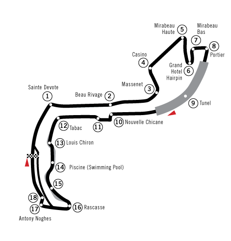

Circuit o de Monaco
El circuito de Montecarlo es un trazado urbano ubicado en el Principado de Mónaco. Es uno de los más antiguos y desafiantes del mundo, caracterizado por sus calles estrechas, curvas cerradas y escasas zonas de escapatoria.

Ficha Técnica
| Parámetro | Valor Oficial |
|---|---|
| Longitud de pista | 3,337 km |
| Número de vueltas | 78 vueltas |
| Distancia total de carrera | 260,286 km |
| Curvas totales | 19 (12 a derecha, 7 a izquierda) |
| RRecord de vuelta rápida | 1:12.909 (Lewis Hamilton, 2021) |
Puntos Emblemáticos del Trazado
Secuencia de las zonas más famosas en orden de recorrido por vuelta:
- Sainte-Dévote: Primera curva a la derecha con fuerte frenada tras la recta de meta.
- Beau Rivage: Subida hacia la zona del Casino.
- Grand Hôtel Hairpin: La curva más lenta de todo el calendario de F1 (~45 km/h).
- El Túnel: Tramo de alta velocidad cubierto con cambio abrupto de luz.
- La Chicane del Puerto: Punto crítico de frenada al salir del túnel.
- La Rascasse: Penúltima curva muy cerrada antes de volver a la recta principal.
Enlaces Externos de Referencia
Consulta más análisis técnicos en portales especializados: